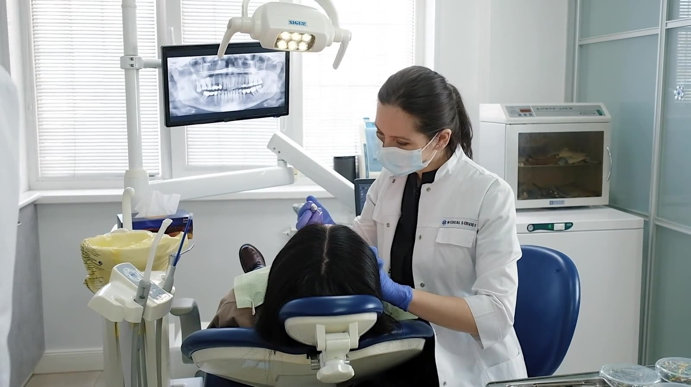
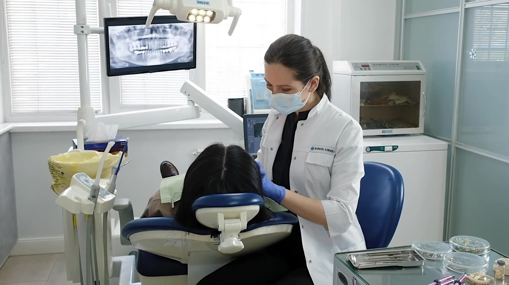
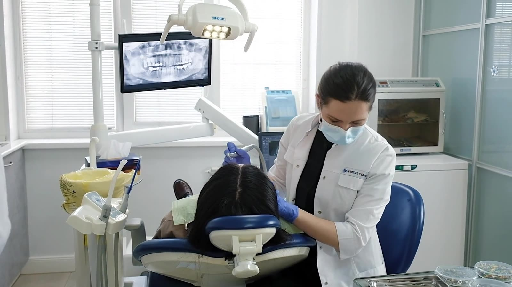
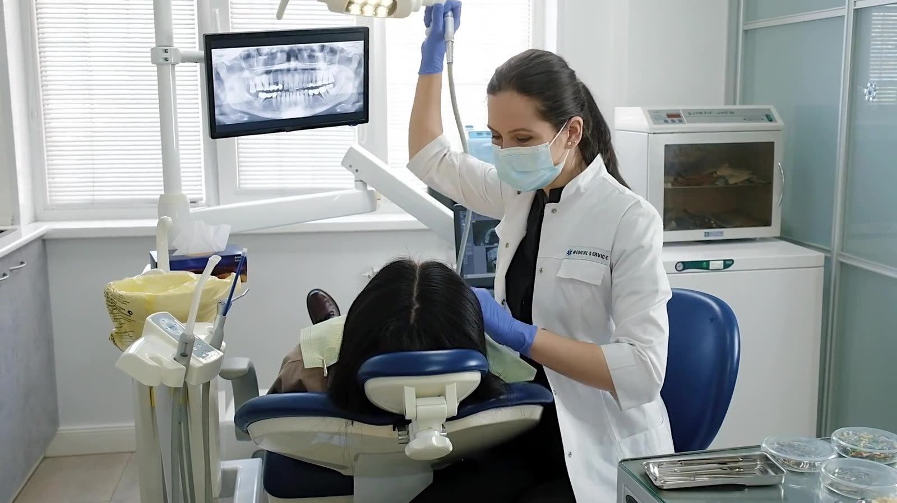
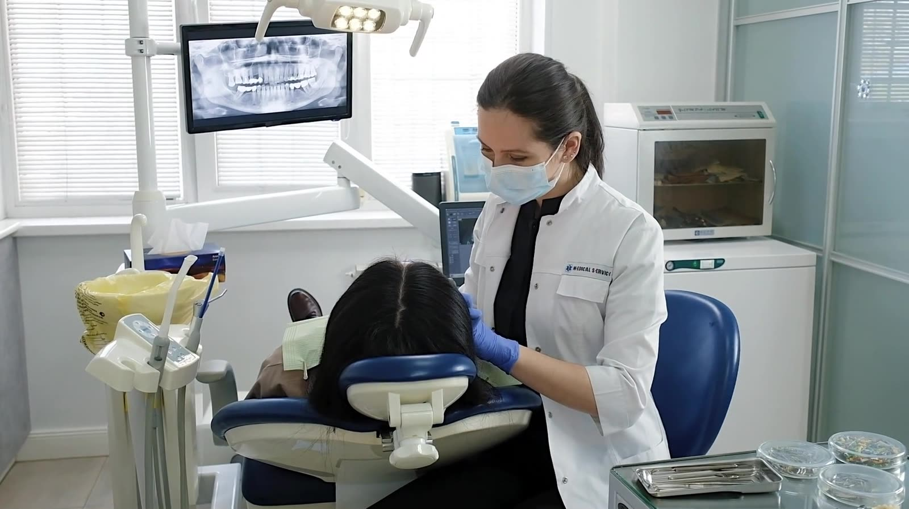
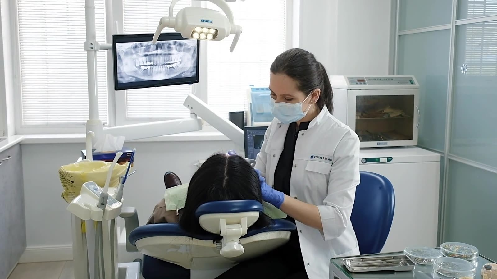

Family & Cosmetic Dentistry in Pikesville and Eldersburg, Maryland
Dentistry that feels personal
Two neighborhood offices, one careful approach. From a child's first checkup to crowns, Invisalign and Botox, we explain every step, work at your pace and see dental emergencies the same business day whenever possible.

Our offices & technology
Comfortable offices, modern care
Both offices are warm, welcoming spaces with friendly teams who treat your time, and your nerves, with respect. Pikesville Dental Associates is in Suite 510 on Old Court Road, and Today's Dental at Eldersburg is on Liberty Road.
Digital X-rays · Clear images with lower radiation than traditional film.
Intraoral cameras · See what we see, so every recommendation is easy to understand.
Modern equipment · Up-to-date equipment and techniques across general, restorative and cosmetic dentistry.
Explore our technology


Patient testimonials
What our patients say
“Love how gentle and informative Dr. Rao is.”
“I had the BEST experience at Pikesville Dental. They have very professional staff and put me at ease. I highly recommend them to anyone looking for a family dentist.”
“I was seen in a timely manner, everyone was friendly and the appointment was completed in a timely manner.”
What we do
Featured dental services
Complete care for every age, from routine cleanings to smile makeovers.
General Dentistry
Comprehensive exams, fillings, crowns and root canal therapy that keep your natural teeth healthy and strong.
Learn morePreventive Dentistry
Cleanings, checkups and early detection to keep small problems small, for children and adults.
Learn moreCosmetic Dentistry
Veneers, professional whitening and Botox to refresh your smile with natural-looking results.
Learn moreRestorative Dentistry
Custom crowns, bridges and implant restorations that repair damaged teeth or replace missing ones.
Learn moreEmergency Dentistry
Toothache, a broken tooth or swelling? Call your office first. We strive to see you the same business day.
Learn moreDental Implants
Natural-looking crowns and bridges placed on dental implants to restore a complete, confident smile.
Learn morePeriodontal Care
Diagnosis and treatment of gum disease to protect the foundation of your teeth.
Learn moreOrthodontics
Invisalign clear aligners straighten teeth gradually and discreetly, without metal braces.
Learn moreSedation Dentistry
Comfort options for anxious patients. Ask our team which sedation options are available at your office.
Learn moreInsurance & financing
Care that fits your plan
Most dental insurance plans are accepted. Tell us your plan when you book and we will verify your benefits before your first visit, so there are no surprises.
Need help fitting treatment into your budget? Ask our front desk about payment plans and financing options before treatment begins.
- Most PPO dental insurance plans
- Cash and personal checks
- Visa, Mastercard, Discover & American Express
- Financing options. Ask our front desk

Meet the dentist
Dr. Sumanya Venkat Rao
General Dentist · D.M.D., B.D.S.
Dr. Sumanya Venkat Rao is a general dentist who has been in practice since 2014, with a focus on general and cosmetic dentistry.
She earned her Doctor of Dental Medicine at the State University of New York at Buffalo and her Bachelor of Dental Sciences from Rajiv Gandhi University in India.
- EducationD.M.D., SUNY at Buffalo
- Also holdsB.D.S., Rajiv Gandhi University
- In practiceSince 2014
- MembershipsADA · MSDA · AGD
The Rao Dental difference
Why choose our practice?
Gentle with nervous patients
Dr. Rao takes dental anxiety seriously. Every visit starts with a conversation, and treatment moves forward only when you are ready.
Same-day emergencies
We strive to see dental emergency patients within the same business day whenever possible.
The whole family, one practice
Children, teens, adults and grandparents, from first checkups to cosmetic care.
Two convenient offices
Pikesville in Baltimore County and Eldersburg in Carroll County.
Insurance help
Most insurance plans are accepted. We verify your benefits before your first visit.
Rated 5.0 by patients
540 patient reviews for our Eldersburg practice.
Gallery
Inside our practice





Good to know
Frequently asked questions
Which office should I choose?
Whichever is more convenient. Pikesville Dental Associates is on Old Court Road in Baltimore County, and Today's Dental at Eldersburg is on Liberty Road in Carroll County. Dr. Rao sees patients at both.
Do you accept my insurance?
Most dental insurance plans are accepted. Tell us your plan when you book and we will verify your coverage before you come in.
What if I have a dental emergency?
Call your office right away. We strive to see emergency patients within the same business day whenever possible.
Do you see children?
Yes. We care for children, teens and adults, and we keep first visits friendly and relaxed.
I am nervous about the dentist. Can you help?
Absolutely. Dr. Rao is experienced with anxious patients. We explain each step, you set the pace, and we pause whenever you ask.
Are Invisalign and Botox available at both offices?
Please call the office you plan to visit and our team will confirm availability and schedule a consultation.
Visit us
Contact & locations
Call the office closest to you or request an appointment online.
Pikesville · Baltimore County
Pikesville Dental Associates
3635 Old Court Rd, Suite 510, Baltimore, MD 21208
Mon, Wed, Thu 8–5 · Tue, Fri 9–5
Eldersburg · Carroll County
Today's Dental at Eldersburg
2030 Liberty Rd, Ste 1, Eldersburg, MD 21784
Mon, Wed, Thu 8–5 · Tue, Fri 9–5
Ready for a healthier smile?
New patients are always welcome at both offices.